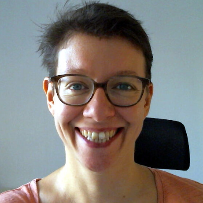
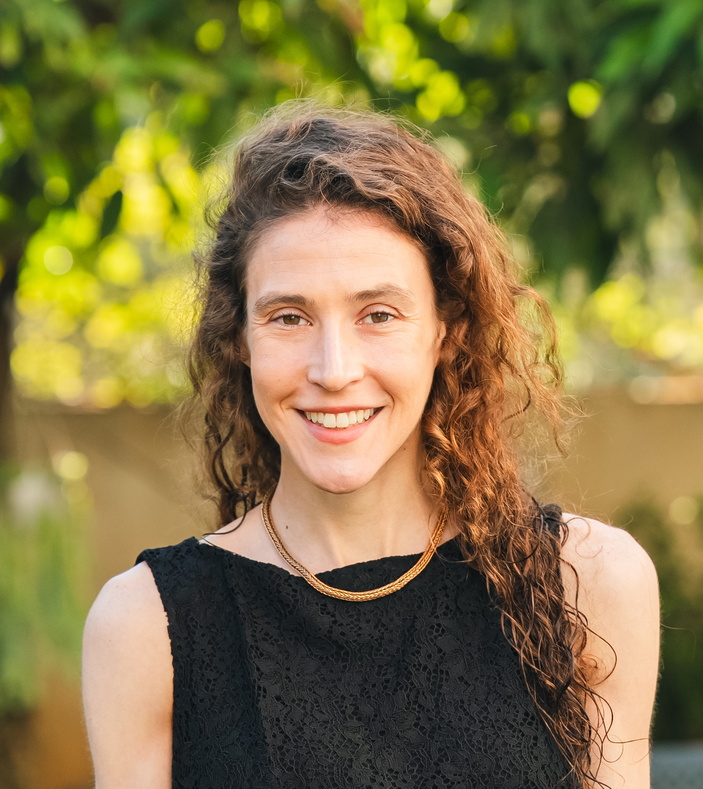

NeurIPS 2026 Workshop Proposal
AIDaR: Data Infrastructure and Benchmarks for Scientific AI
From experimental data to reliable scientific AI systems.
Abstract
Scientific AI is moving from curated prediction tasks toward systems that work directly with experimental data. Foundation models, retrieval systems, and agents are being asked to use experimental data, query scientific knowledge, run analyses, and support follow-up decisions. Scientific data must remain connected to samples, assays, protocols, measurements, workflow outputs, and the context needed to interpret results outside the lab or notebook where the data was produced.
AIDaR focuses on two problems in this transition. First, how should scientific data be organized so models and agents can use it: from raw measurements and analysis-ready files to relational or graph-structured knowledge, multimodal biomedical measurements, workflow systems, and large industrial datasets used for model training and wet-lab feedback? Second, how should evaluations determine where frontier models are reliable: across biological reasoning, practical data analysis, retrieval over structured scientific knowledge, assay-specific workflows, and deployed scientific AI systems?
The workshop will bring together researchers, industry scientists, and engineers building scientific data systems, foundation models, agents, biomedical evaluations, and industrial assay platforms.
Invited speakers


Panelists


Workshop tracks
Track 1: Data infrastructure for scientific AI
Scientific data must move from raw measurements into forms that models, retrieval systems, and agents can use. This includes linking files to samples and assay conditions, preserving the steps that produced an analysis-ready dataset, representing scientific relationships as tables, graphs, or knowledge networks, and exposing data through tools that scientists and agents can both use.
Topics include scientific foundation models, relational and graph-structured data, multimodal biomedical measurements, workflow systems, and large industrial datasets used for model training and wet-lab feedback.
Track 2
Track 2: Evaluations for scientific AI
Scientific AI systems should be tested on tasks that resemble real scientific work: choosing inputs, running analyses, checking controls, interpreting noisy results, and recovering biological or physical conclusions from data.
Topics include biological reasoning, practical data analysis, retrieval over structured scientific knowledge, multimodal biomedical data, failure analysis, and studies of where performance changes across assays, platforms, workflows, or data organization.
Why now
Scientific AI is moving from models trained on curated datasets to systems that interact with experimental data, scientific literature, databases, and lab workflows. These systems need data that preserves sample, assay, protocol, measurement, and workflow context.
Modern scientific data systems are not organized for this style of use. Raw instrument data, sample tables, images, count matrices, workflow outputs, notebooks, and plots are often split across storage systems, LIMS/ELN tools, workflow runners, and lab-specific conventions. Large industrial datasets add further pressure: perturbation datasets, multiplexed screens, tissue-model systems, and wet-lab feedback loops must be connected to model-training datasets and analysis tools.
Target audience
AIDaR is for researchers, scientists, and engineers building AI systems that must work with real scientific data. The audience includes AI-for-science researchers, foundation-model and agent builders, scientific RAG researchers, computational biologists, biomedical ML researchers, benchmark and evaluation researchers, data-management and provenance researchers, and teams responsible for assay data, workflow systems, LIMS/ELN integrations, model-training datasets, and deployed analysis tools.
We will welcome methods papers and practitioner reports, including scientific data-system case studies, workflow and tool demos, evaluation suites, failure analyses, assay metadata schemas, retrieval benchmarks, agent task suites, and lessons from deployed scientific AI systems.
Schedule and program
| 08:45 | Arrival, question wall, opening remarks, COI/LLM policies, and workshop tracks. |
| 09:10 | Invited talks: Max Welling and Jure Leskovec. AI-operable data for foundation models, discovery platforms, relational data, and structured scientific knowledge. |
| 10:30 | Contributed spotlights: scientific data systems and practical evaluations. |
| 11:20 | Panel 1: Benchmarking AI on practical biology. Evaluations that approximate biological reasoning and practical data-analysis tasks. |
| 12:00 | Poster/demo session 1 and lunch. |
| 13:15 | Invited talks: Marianna Rapsomaniki and Chloe-Agathe Azencott. Biomedical data, assay design, sample context, treatment conditions, multimodal measurements, biological signal, and reproducibility. |
| 14:00 | Contributed spotlights: analysis histories and deployment lessons. |
| 14:50 | Poster/demo session 2 and coffee. |
| 15:40 | Breakout groups: AI-facing data infrastructure for large industrial datasets. |
| 16:25 | Panel 2: Engineering AI-operable assay data systems. Sample metadata, raw instrument data, analysis-ready files, workflow inputs and outputs, version history, and scientist-facing interfaces. |
| 17:05 | Breakout report-out, community roadmap, closing remarks, and post-workshop report plan. |
Format. Short invited talks, central contributed work, poster/demo sessions, and breakout groups that produce short written outputs for the post-workshop report.
Speakers. Max Welling and Jure Leskovec open with AI-operable scientific data systems; Marianna Rapsomaniki and Chloe-Agathe Azencott ground the evaluation track in biomedical data.
Panels. Panel 1 focuses on practical biology evaluations. Panel 2 focuses on assay data systems: sample metadata, raw instrument data, analysis-ready files, workflow inputs and outputs, version history, and scientist-facing interfaces.
Breakouts. Breakouts focus on large perturbation datasets, multiplexed in vivo screens, tissue-foundry systems, model training, and wet-lab feedback, with expected participation from ManifoldBio, Polyphron, Tahoe Therapeutics, and LigandAI.
Organizers
